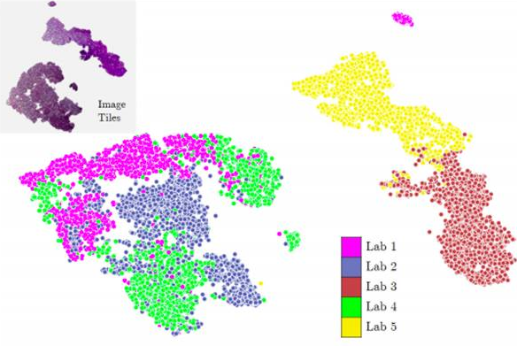

|
I am a second-year Masters student in Computational Science and Engineering (College of Computing) at Georgia Tech. I am a graduate researcher at Biomedical Informatics Laboratory advised by Prof. May Wang. My research interests lie broadly in image processing and machine learning with focus on biomedical data analysis. My current research focuses on causal inference and robust policy learning using electronic health records. I have previously worked on developing deep generative models and perceptually motivated representation for color transfer in histopathology images. I am also a part of Prof. Jaydev Desai's lab, wherein I work on X-Ray arm tracking and pose estimation for image-guided surgery. Earlier, I did my MBA from IIM Calcutta, and completed my undergraduate studies at IIT Kharagpur, where I did my thesis with Prof. Ajoy Kumar Ray on texture-based oral cancer prediction. While at IIT Kharagpur, I got an opportunity to pursue summer internships with Prof. Christos Davatzikos at University of Pennsylvania and Prof. Paolo Fiorini at University of Verona (Italy). I have five years of professional experience in developing machine learning models for consumer data analysis.Email / CV / Google Scholar / LinkedIn |
|


{kind=link}
| Robust Counterfactual Learning
Designing robust off-policy learning algorithm to tackle the data uncertainity in electronic health records. | |
| Sequential Decision Making Applying meta-reinforcement learning for sequential decision making using clinical data. | |
| Medical Image Processing I have worked on texture based cancer prediction and ROI segmentation in histopathology and MRI images. Currently, I am working on segmentation and pose-tracking using X-Ray images for image-guided surgery. |
| Mastercard Advisors, India | Manager, Advanced Analytics | 2017-2018 |
| Loyalty Partner, India (subsidiary of American Express) | Manager, Customer Insights | 2016-2017 |
| EXL Service, India | Senior Manager, Decision Analytics | 2013-2016 |
| Sabre Holdings, India | Associate Software Developer | 2010-2011 |
,“”,
|
Li Tong, Anirudh Choudhary*,, Shreyas M. Patil*, Yundong Zhang*, May Wang IEEE Journal of Biomedical & Health Informatics |
|
Florian Heemeyer, Achraj Sarma, Anirudh Choudhary, Hannah J. Paterson, Nicolas S. Castro, Jaydev P. Desai International Conference on Intelligent Robots and Systems 2020 |
|
|
Florian Heemeyer*, Anirudh Choudhary*, Jaydev P. Desai To appear in International Symposium on Medical Robotics (Georgia Tech), 2020 Image intensifiers, also known as C-arms, are important and low-cost tools for surgeons to guide minimally-invasive procedures. However, image intensifiers suffer from several image distortions, which can be misleading during an automated minimally-invasive surgery. We propose a combination of camera-based tracking system and calibration grid to perform accurate distortion correction. |
|

|
Anirudh Choudhary, Hang Wu, Li Tong, May D. Wang ACM International Conference on Bioinformatics, Computational Biology and Health Informatics, 2019 (Long Oral) Inspired by the effectiveness of deep neural networks in evaluating perceptual similarity of natural images, in this paper, we propose TriNet-P, a color-perceptual similarity metric for whole slide images, based on deep metric embeddings |
|
|
M. Krishnan, Anirudh Choudhary, Chandan Chakraborty, Ajoy Kumar Ray, R. Paul Micron Journal (Elsevier), 2011 A novel texture based segmentation algorithm for better delineation of the epithelial layer from histological images using Gabor Filter and multistep region-merging using watershed-generated superpixels. |
|
|
M. Krishnan, Pratik Shah, Anirudh Choudhary, Chandan Chakraborty, R. Paul, Ajoy Kumar Ray Tissue Cell Journal (Elsevier), 2011 Evaluating statistical and spectral texture features of epithelial layer in oral whole slide images for cancer classification using Support Vector Machines |
|
|
Anirudh Choudhary Nicola Moretto, Francesca P. Ferrarese, Giulia A. Zamboni Workshop on 3D Segmentation in the Clinic: Liver Tumor Segmentation Challenge, MICCAI, 2008 (Oral) An innovative semi-automatic liver tumor segmentation technique using cross-entropy minimization based thresholding |
(*equal contribution)
|
|
| NSF Travel Grant ($1000 support) and Georgia Tech Student Travel Award for attending ACM BCB Conference | 2019 |
| Research Assistantships with full tuition support throughout graduate studies at Georgia Tech | 2018- |
| Business Excellence Award and Quarterly Best Performer Award at Loyalty Partner, India | 2017 |
| Among top 5% performers at EXL Service - Rated 'Exceeds Expectations' | 2015 |
| 99.61 percentile in Common Admission Test for admission to Indian Institutes of Management | 2011 |
| Runners-up in Procter and Gamble’s marketing strategy case-study competition, IIM Calcutta | 2013 |
| Masters Research Scholarship awarded by Government of India at IIT Kharagpur | 2010 |
| Research Assistantships during internships at University of Verona and University of Pennsylvania | 2009 |
| Killer Tech Award and High Five Award for being among top 5 performers at Sabre Holdings | 2010 |
| Best Outgoing Technology Award for contributions to intra-institute technical events at IIT Kharagpur | 2010 |
| Winner - National level product design competition at Entrepreneurship Summit, IIT Kharagpur | 2010 |
| All India Rank 68 in IIT-JEE Prelims Examination and 507 in All India Engineering Entrance Examination | 2005 |
| CBSE Merit Certificate in Mathematics for being among top 0.01% of students at a national level in Std 12th | 2004 |
| Secured 5th rank in Regional Mathematical Olympiad and participated in Indian National Mathematics Olympiad | 2002 |
| Mamraj Agarwal Scholarship for being among top 10 students in State in Std 10th | 2002 |
| Qualified for final round of Kishore Vaigyanik Protsahan Yojana; Cleared state level of National Talent Search Examination | 2002 |
|
|
|
Template Credits: Jon Barron |